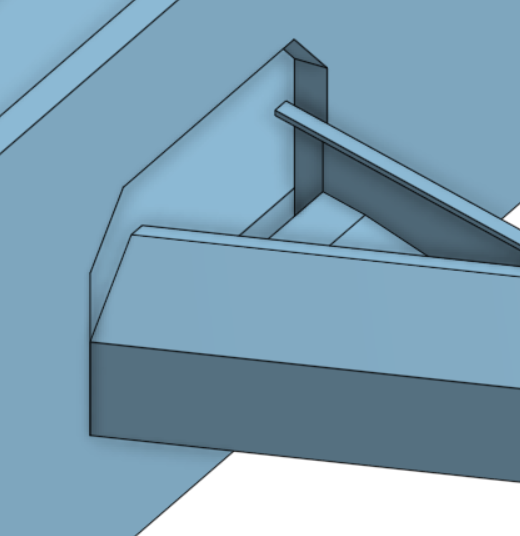

細部設計
〈集球門〉
原先的設計，發現組裝後門框的高度沒有高於球門，怕會出現卡球的可能所以要重新畫

第二版

在畫的時候發現球檯沒有高度，而假如球快速的撞擊檔板可能會造成球直接反彈並有可能回到場地內，就把球檯加高3英吋，在檔板的部分畫成密閉式以防球會跑出去

而在這裡加裝這支橫桿是因為在舊版的球門框有高低的落差，如果不加這支橫桿球在進入擊球門前會被凹槽卡住，因為這個原因所以在新版就把高低落差的問題給解決所以在新版就沒有這支橫桿。
一開始畫通道的時候，想說話圓弧型的比較好滾動，但在簡化方面就比較困難，所以在第三版畫的時候就把它改成方形的。

零件尺寸 << Previous Next >> 106心得